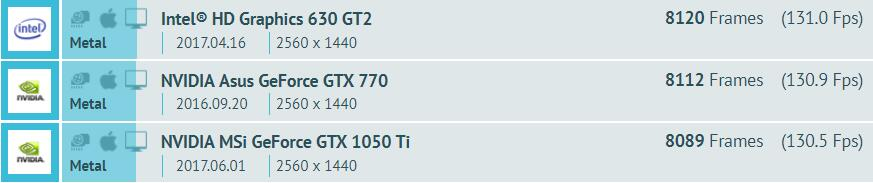
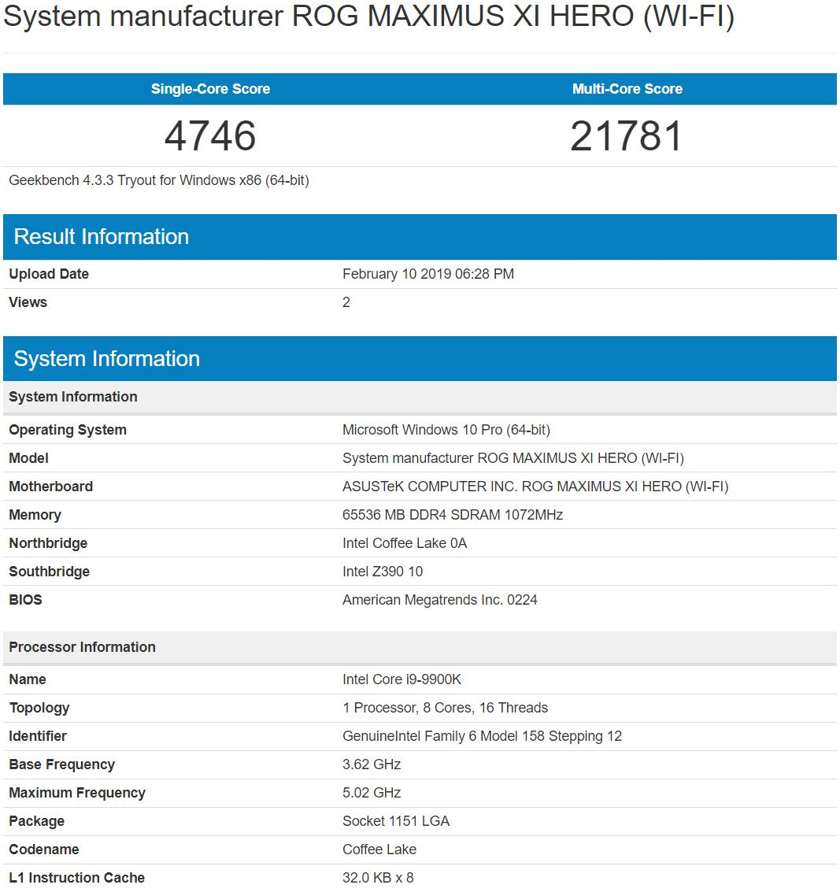
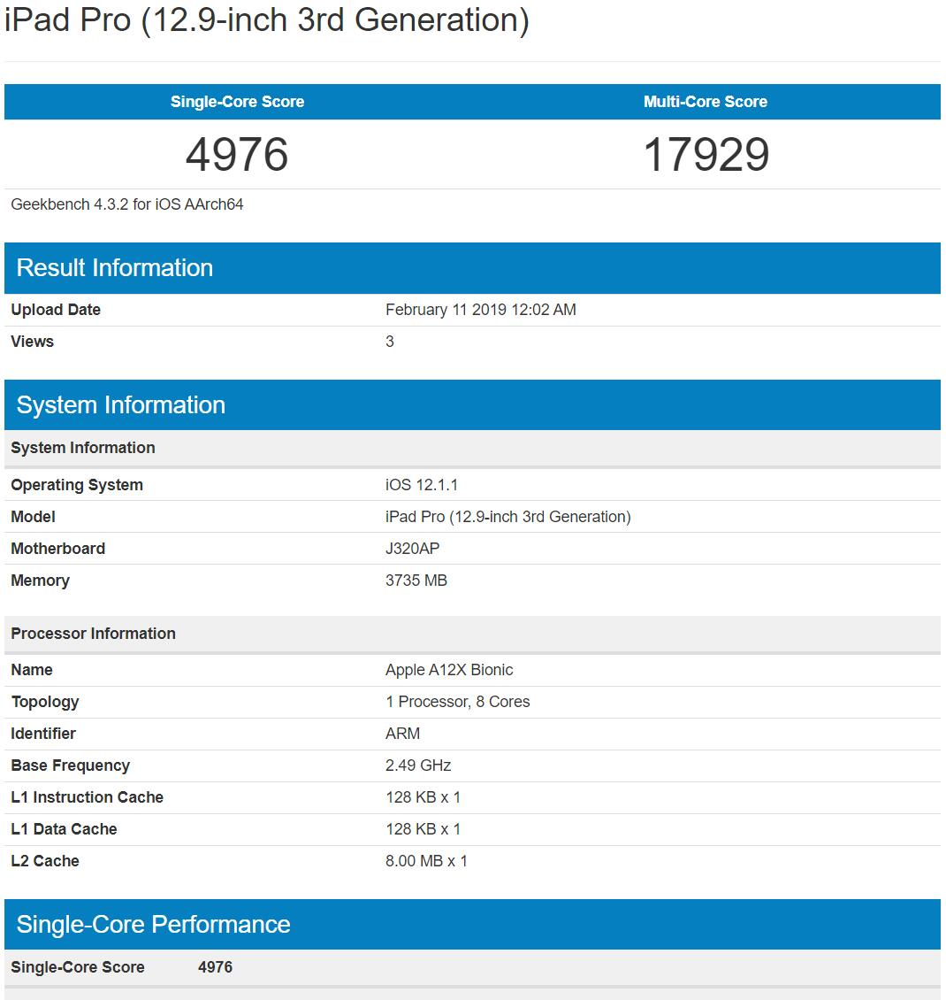

苹果在发布新 iPad Pro 时如此宣传 A12X：“比市面上大多数笔记本电脑的性能都要好”
这着实惊到了我。
随后，逼乎大佬们拿着 spec2006 GFXbench GeekBench(AppleBitch) 的成绩，大肆鼓吹 A12X 吊打 8650U，在此风头之下，牙膏厂大有完全溃败之势。
而我只想说一句：
说睿频 45W 的实诚 14nm+++++ 打不过峰值 21W（电流计实测）的注水 7nm 的你们是石乐志？
为了探究这一事实，先给出测试构想，具体实现待作者高考后再实行。
质疑：
- 我对于 spec2006 这一老牌测试在 13 年后的今天是否还能作为评判标准表示质疑。
- 我对以 GFXbench 的得分作为评价标准的人只有一个字：
滚
原因见图：

HD 630 比 GTX 1050Ti 强你怕不怕？
- 我对以 GeekBench 的得分作为评价标准的人只有一个字：
滚
原因见图：


A12X 单核比 9900K@5Ghz 强你怕不怕？
解决：
- CPU 部分，由于 iOS 12 可以 rootless 越狱使用终端，可以使用 Linux PC 与 iPad Pro 同时执行 GCC 编译出的可执行 C 语言文件，并用 clock() 函数计时，由于 XNU 与 GNU 同为支持 POSIX (ISO/IEC 9945-1:1990) 标准的操作系统，故不存在跨平台问题，可以比较。
可以用作测试的算法：
- Prime
- Pi
- Dijkstra
- FFT
- ……
编译命令：gcc “in.c” “test.out” -lm 无多余参数。
GPU 部分，可以选择跨平台引擎如虚幻等直接比较帧数，不多赘述。
留坑待填。